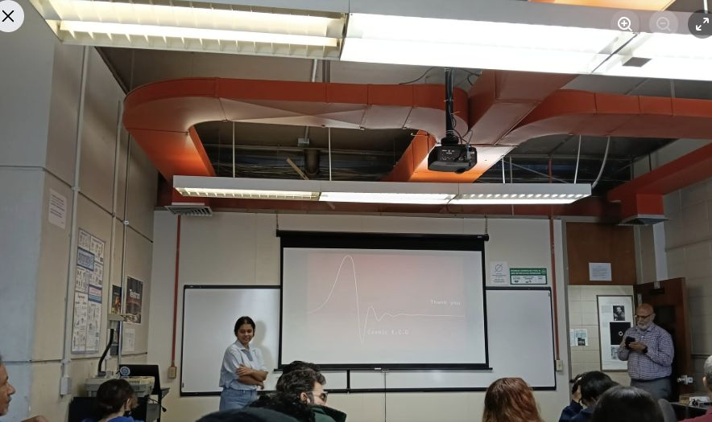
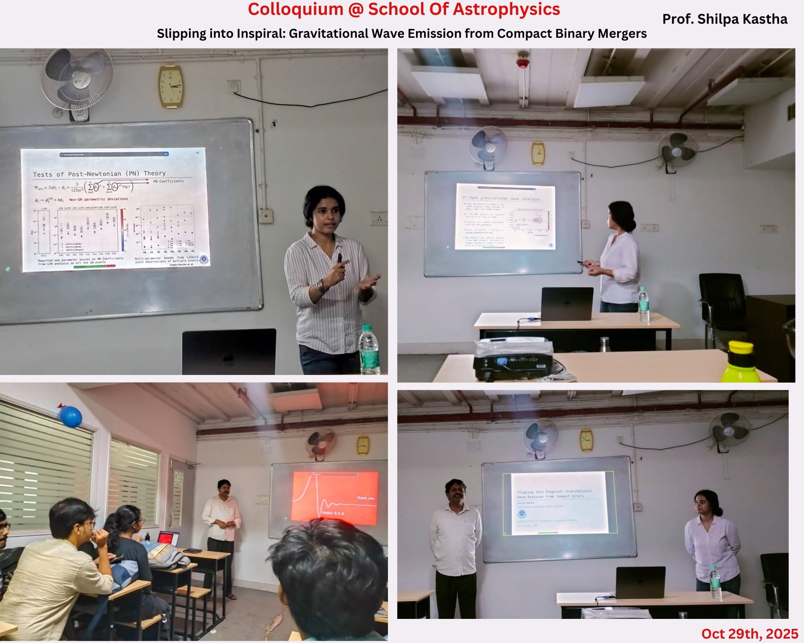

PUBLIC TALK
A talk at UPR Mayagüez
Departamento de Física · University of Puerto Rico, Mayagüez
View on FacebookGravitational waves, black holes, and conversations beyond the research community.

Departamento de Física · University of Puerto Rico, Mayagüez
View on Facebook
School of Astrophysics · Presidency University · 29 October 2025
View on Facebook